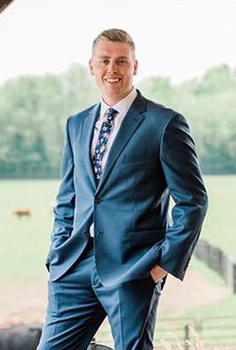

Who Am I?

A Full Stack Developer (Padawan)
I am a Full Stack Web Developer in training, or a Padawan as I like to call it. I began web development as a side hobby over the last year, and soon fell in love with it. I decided that I wanted to make a career change for the best, and decided to go back to school and become a Full-Stack developer. I am still young in my knowledge, but my love for learning new technologies and languages has turned this new education into a passion. Beyond development, you can find me either hiking with my wife, learning new recipies in the kitchen, or attempting to become a handy man around the house...though I sometimes fall flat.